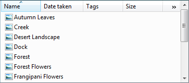
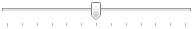

| Balloons inform users of a non-critical problem or special condition in a control. |
 Check boxes allow users to make a decision between two or more clearly differing choices. Check boxes allow users to make a decision between two or more clearly differing choices. |
 Command buttons allow users to perform an immediate action. Command buttons allow users to perform an immediate action. |
| Command links allow users to make a choice among a set of mutually exclusive, related choices. |
 Drop-down lists and combo boxes allow users to make a choice among a list of mutually exclusive values. Drop-down lists and combo boxes allow users to make a choice among a list of mutually exclusive values. |
 Group boxes allow users to see relationships among a set of related controls. Group boxes allow users to see relationships among a set of related controls. |
 Links allow users to navigate to another page, window, or Help topic; display a definition; initiate a command; or choose an option. Links allow users to navigate to another page, window, or Help topic; display a definition; initiate a command; or choose an option. |
 List boxes allow users to select from a set of values presented in a list that is always visible. With a single-selection list box, users select one item from a list of mutually exclusive values. With a multiple-selection list box, users select zero or more items from a list of values. List boxes allow users to select from a set of values presented in a list that is always visible. With a single-selection list box, users select one item from a list of mutually exclusive values. With a multiple-selection list box, users select zero or more items from a list of values. |
|  List views allow users to view and interact with a collection of data objects, using either single selection or multiple selection. |
 Notifications inform users of events that are unrelated to the current user activity. Notifications inform users of events that are unrelated to the current user activity. |
 Progress bars allow users to follow the progress of a lengthy operation. Progress bars allow users to follow the progress of a lengthy operation. |
| Progressive disclosure controls allow users to show or hide additional information including data, options, or commands. |
 Radio buttons allow users to make a choice among a set of mutually exclusive, related choices. Radio buttons allow users to make a choice among a set of mutually exclusive, related choices. |
 Search boxes provide users a way to locate specific objects or text quickly. Search boxes provide users a way to locate specific objects or text quickly. |
|  Sliders allow users to choose from a continuous range of values. |
 Spin controls allow users to change incrementally the value within its associated numeric text box. Spin controls allow users to change incrementally the value within its associated numeric text box. |
 Status bars display information about the state of the current window, background tasks, or other contextual information. Status bars display information about the state of the current window, background tasks, or other contextual information. |
| Tabs present users with related information on separate labeled pages. |
 Text boxes allow users to display, enter, or edit a text or numeric value. Text boxes allow users to display, enter, or edit a text or numeric value. |
 Tooltips label an unlabeled control. Tooltips label an unlabeled control. |
 Infotips describe an object to which the user is pointing. Infotips describe an object to which the user is pointing. |
 Tree views allow users to view and interact with a hierarchically arranged collection of objects, using either single selection or multiple selection. Tree views allow users to view and interact with a hierarchically arranged collection of objects, using either single selection or multiple selection. |